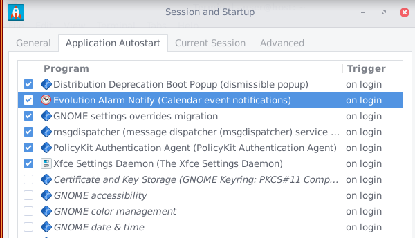

Due to gdm dependencies it come with too wide gnome tools which arent useful to have as a default, but if there is no way around except if we have them then its better to have them disabled by default as this will drain extra resources for nothing e.g Evolution Alarm Notify: (there is even no evolution by default)
